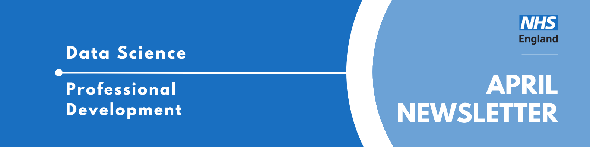
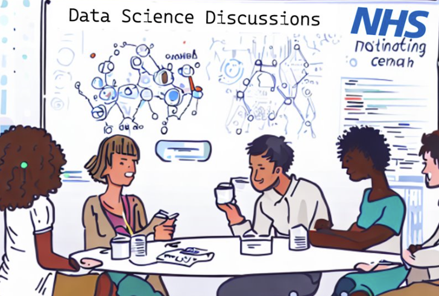

Professional Development Newsletter April 2024

Welcome to the latest Professional Development newsletter, brought to you by the Data Science Professional Development Functional Team.
The newsletter team are always happy to receive constructive feedback, and we invite you to send us any contributions you may have.
There are some legacy NHS Digital items which we have identified with❗
If you cannot access something of interest to you, please reach out.
Thanks for reading! – PD newsletter team
Highlights
Now Accessible to All!
After trialing the use of the NHS Digital GitHub to aid in the creation of the newsletter, it has now been officially moved to the publically accessible NHS England GitHub.
We strongly encourage contributions to the newsletter from all our colleagues, which can be submitted through clicking here or any of the “Contribute” buttons around the site.
Mentoring Scheme Expression of Interest
The Professional Development Function Team are investigating the interest in starting up a Mentorship Scheme between senior and junior NHS Data Science colleagues.
Mentorship benefits both parties: mentees are provided with guidance from someone who has once been in their shoes and mentors gain insights from a new perspective, and gain experience in staff management and development. If you are interested in becoming a mentor and/or mentee, please fill out the expression of interest form.
Events
Lots of exciting things coming up! See the full calendar here❗, and a small selection below.
HDR UK Advanced Computer Science Summit: AI and Healthcare
24 April 2024, 10:00AM - 3:30PM, Online
The HDR UK Advanced Computer Science Summit: AI and Healthcare aims to anticipate advances in technologies that are on the horizon and discuss the impact these may have on health data research.
Cool speakers include but are not limited to:
- Elham Kashefi (Chief Scientist for the UK’s National Quantum Computing Centre will discuss quantum computation)
- Honghan Wu (Associate Professor at the Institute of Health Informatics at UCL will lead on NLP and using text technologies and Knowledge Graph techniques to analyze health data)
- William Whiteley (Professor of Neurology and Epidemiology at the University of Edinburgh will discuss replicating RCTs by use of data at large scale)
- Mobuolafoluwa Onayade (Health Data Scientist and Analyst at Swansea University will be presenting on The use of Causal Machine Learning (CausalML) as an upgrade to Traditional Machine Learning)
Digital Footprints 2024
Wednesday 8th May 1pm – Thursday 9th May 4pm, University of Bristol
Focusing on digital footprints data for social impact, inviting innovative research that harnesses the potential of these novel datasets to address pressing societal challenges and drive positive change. The conference is organised by Turing Novel Data Linkage for Health and Wellbeing Interest Group.
Please note attendance of the conference is subject to a £50 fee.
Data Science Festival MayDay 2024
Saturday 18th May, 9-6pm, CodeNode, London
Enter the ballot for a chance to grab a free ticket to this years’ Data Science Festival, hosted in London. Many speakers and sessions to be announced, but already lined up are talks on Gender Bias in Machine Learning and Leveraging GANs for Building Synthetic Data.
Dark Data - Data Ethics and Society Reading Group
Tuesday 4th June, 1-2pm, Online (Teams)
Join the Public Sector Data Ethics & Society Reading Group to discuss David Hand’s book ‘Dark Data’. Sign up now to reserve your spot (and receive details of the 40% discount off the paperback we’ve scooped😎).
See more future events on our confluence calendar❗
Know of any events we should feature next month? Let us know by clicking the “Contribute” button, or here.
Knowledge Sharing
Data Science Discussions

On Thursday 11th April we had our first Data Science discussion, hosted by Will Poulett. Data Science Discussions are a new event, focussed on peer to peer discussions on a broad range of Data Science topics. For this discussion Will asked everyone attending to research a future application of AI that interested them, and also consider how it could be later applied to healthcare. The discussion began with Will presenting his case: Project CETI, who are applying advanced machine learning and state-of-the-art robotics to listen to and translate the communication of sperm whales. Check out his slide deck here. We then broke up into smaller groups to further discuss his case and our own.
The Professional Development Functional Team hope to hold Data Science Discussions monthly. If you have an area of Data Science you’re interested in sharing, and encouraging others to look into too, please contact us to host a session! Most of the session is held in break out rooms, and so all you need to do is spark discussion.
RAP Drop In Sessions (Now on Tuesdays)
The RAP Squad hold a weekly drop in session on Teams,Tuesdays 10-11am, for anything and all things RAP (Reproducibile Analytical Pipelines). Come along to ask questions, get tips, or share instances of best practice in your team!
Check out the RAP Community of Practice website to learn more, including information on what the government has been saying about RAP (spoiler: it’s fast becoming the required way of working with data).
Stay tuned for an update on what seminars & show and tells will look like in the new team. Please bear with us as it is likely to be a learning process! Contact Mia Noonan for more information.
Training Opportunities
The Turing Way Book Dash
The Turing Way Book Dash is a collaborative event where you’ll work with others to add to and improve The Turing Way book and become a part of its community.
The online contribution sessions (collaborative co-working format) and the social networking session will take place from 3 to 6 June 2024, and two community share-out events on 7 June 2024. See details. There may also be an opportunity to join an in-person hub in your area - please indicate your interest in the application.
Application Please see the application form here. Submission deadline is Friday 26th April 2024 and the application form may take around 30 minutes to complete.
Who should apply? Everyone that has expertise that The Turing Way project can benefit from. The skills and contributions that they’re looking for include, but are not limited to:
- Tools, methods, and case studies from reproducibility in Data Science 🛠️
- Science communication skills: skills in writing, editing, and/or exciting interactive communications 📝
- Project design and management skills 📊
- Approaches and principles for collaboration in data science 🤝
- Collaboratively writing new chapters 📝
- Reviewing others’ contributions or editing the current chapters 📋
- Updating how the book looks online (e.g., website design, CSS, logos, layout) 🖥️
- Documenting other contributions as illustrations or stories 📸
Participants will be expected to attend at least one co-working session (2.5 hours each) per day virtually.
Check out all the resources in the Training Brochure ❗ Can you spot something missing? Contact us!